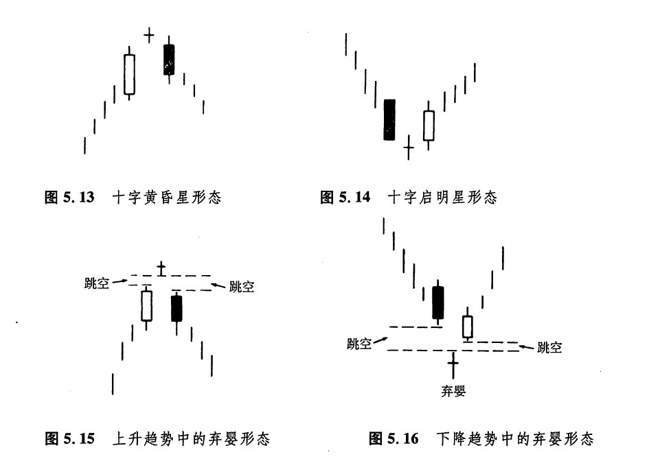
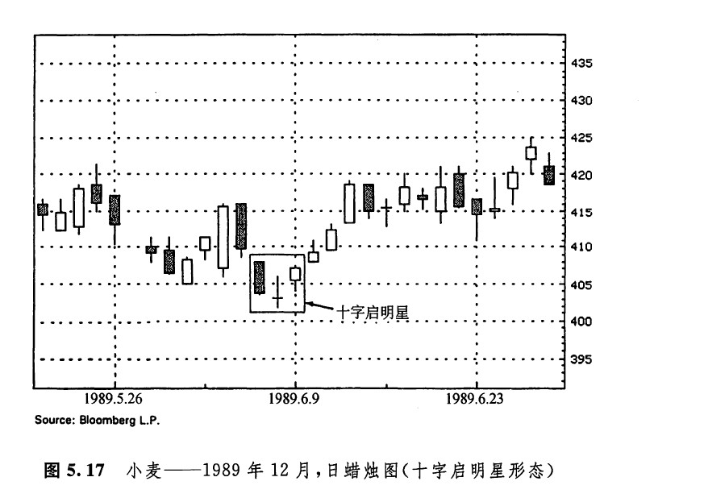
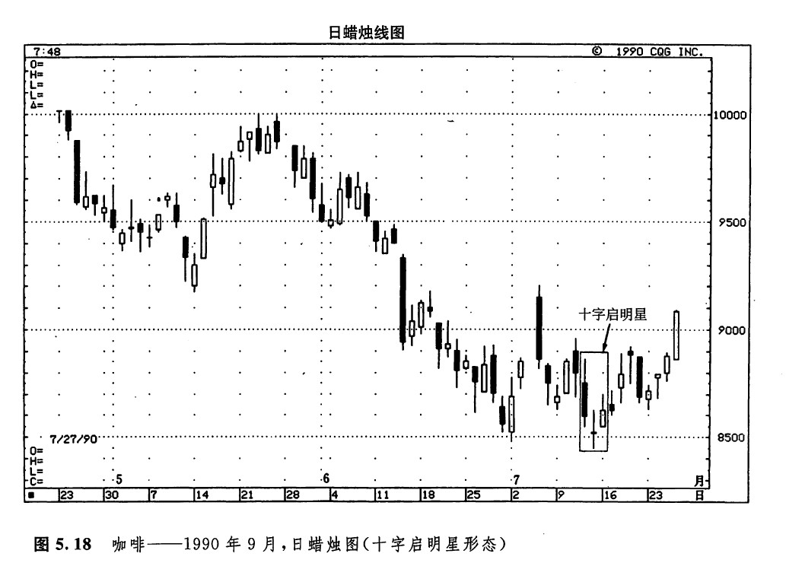
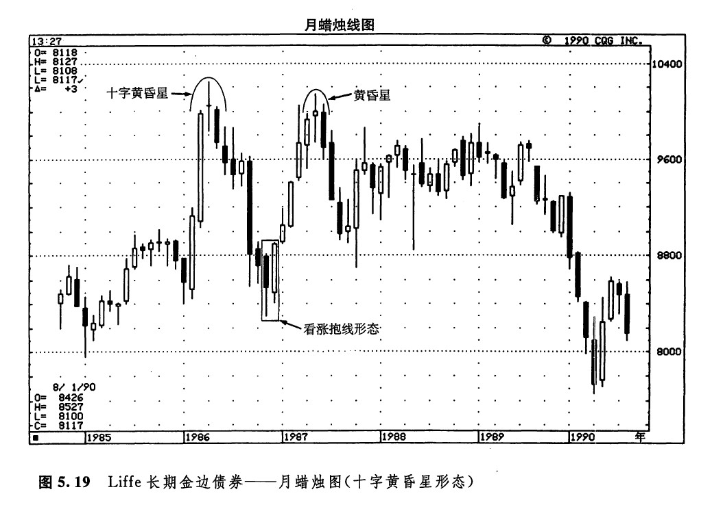
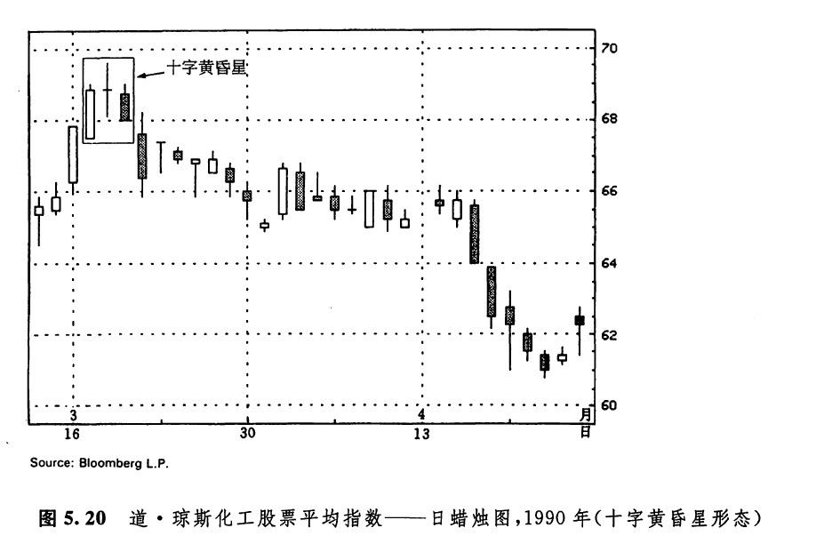
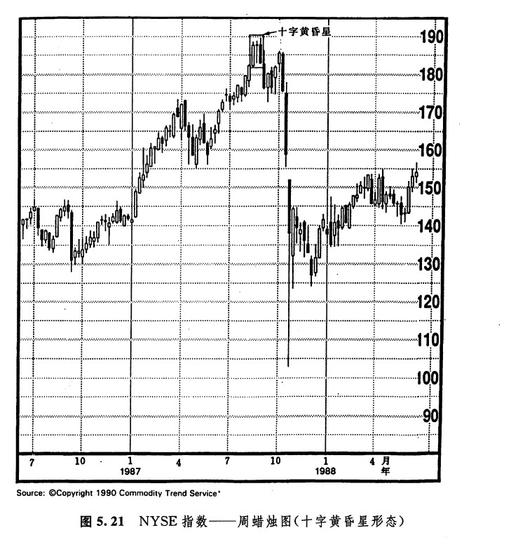
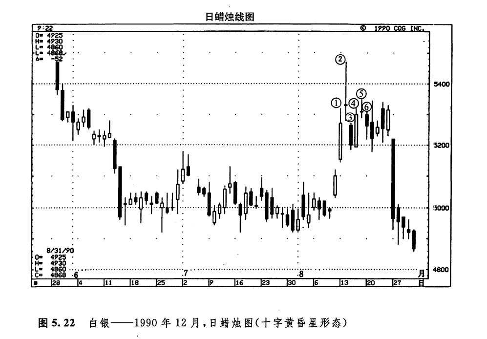

如果在上升趋势中出现了一根十字线，并且这根十字钱与前一个实体之间形成了向上的价格跳空；或者在下降趋势中出现了一根十字线，并且这根十字线与前一个实体之间形成了向下的价格跳空，那么，这根十字线就称为十字星蜡烛线（简称十字星线）。图5.2所示就是一根十字星线。十字星线的出现，构成了潜在的警告信号，表明市场的当前趋势已经易于发生变化了。在这根十字线之后的蜡烛线，应当构成趋势反转的验证信号。具体说来，在上升趋势中，如果在十字星线后跟随着一根长长的黑色实体，并且它的收市价深深地向下扎入十字星线之前的白色实体的内部，那么，这根黑色实体就构成了市场顶部反转过程的验证信号。这样的形态就称为十字黄昏星形态（如图5.13所示）。十字黄昏星形态是常规黄昏星形态的一种特殊形式。在常规的黄昏星形态中，星线，即第二根蜡烛线，具有较小的实体，但是在十字黄昏星形态中，星线是一根十字线。因为十字黄昏星形态包含了一根十字线，所以具有更重要的技术意义。
在上升趋势中，十字星线的出现常常构成一个警告信号，说明市场顶部已经迫近了。但有一点非常重要，值得引起注意：如果在十字星线之后，是一根向上跳空的白色蜡烛线，那么这根十字星线的疲弱性质就不再成立了。
在下降趋势中，如果在一根黑色实体之后，跟随着一条十字星线，第三根蜡烛线是一根坚挺的白色蜡烛线，并且它的收市价显著地向上穿入第一根黑色实体之内，那么，该底部反转信号就得到了第三根蜡烛线的验证。这个三蜡烛线形态称为十字启明星形态（如图5.14所示）。这一类启明星形态能够构成有意义的市场底部过程。在下降趋势中，如果在十字星线之后出现的是一根黑色蜡烛线，并且这根黑色蜡烛线向下跳空到了十字星线之下，那么这根十字星线潜在的看涨意义就冰消瓦解了。这一点就是为什么在十字星线出现后，我们必须等待下面一、二个时间单位的验证信号的原因。
如果市场上出现了一根向上跳空的十字星线（就是说，该十字星线的下影线与前一根蜡烛线的上影线没有任何重叠之处），它的后面再眼着一条向下跳空的黑色蜡烛线，并且在这根黑色蜡烛线的上影线与十字星线的下影线之间也形成了价格跳空，那么，这根十字星线就构成了一个主要顶部反转信号。这种形态称为弃婴顶部形态（如图5.15所示）。这种形态非常罕见！
在与上述形态对应的底部反转形态中，道理是一样的，只不过方向相反而已。具体说来，在下降趋势中，如果在一根十字星线的前后均发生了价格跳空（包括有关蜡烛线的上下影线也互不接触），那么这条十字星线就构成了一个主要底部形态。人们将这种形态称为弃婴底部形态（如图5.16所示）。这种形态也极为少见！弃婴形态与西方的岛形顶部形态或岛形底部形态类似，不过其中的孤岛还应当是一根十字线。

在图5.17中，6月初有一条十字星线，它止住了先前的价格下跌。虽然这根十字星线的影线与前一天的黑色实体有所重叠，但它依然满足星线的条件。在这条星线之后，出现了一条白色实体，这就确认了下跌行情的结束。由这条十字星线，以及它前面的黑色实体和它后面的白色实体，共同构成了一个三线形态的十字启明星形态。

在图5.18所示的十字星蜡烛线上，价格曾经一度向下突破了0.85美元的水平。这是7月初形成的支撑区。但是，市场无力维持这里的新低价位，这一事实本身就具有看涨的意义。再加上图示的十字启明星形态，我们就有了两方面的理由来推测这一市场底部。

在图5.19所示的实例中，既有一个十字黄昏星形态，也有一个．普通的黄昏星形态。从1986年3月到当年5月，市场的价格变化构成了一个十字黄昏星形态。本形态阻止了仅从一、二个月前开始的一场剧烈的上涨行情。随着这个十字黄昏星形态的出现，发生了一段抛售行情。后来，一个看涨吞没形态结束了这段下跌行情。1987年中，出现了一个黄昏星形态，成为从上述吞没形态开始的上升趋势的顶部。

在图5.20中我们看到，3月17日、18日、19日的三根蜡烛线构成了一个十字黄昏星形态。本形态结束了从前一周的锤子线开始的上涨行情。本实例再次说明，在股票市场上，某些蜡烛图形态在外形上可能具有更大的灵活性。这是因为股票市场与期贷市场不同，与期货市场比起来，股票市场的开市价大多可能与前一日的收市价基本一致。如此一来，在我们分析特定的某些蜡烛图形态时，本来是将当日的开市价同前一日的收市价联系在一起的，但是从这一事实出发，这样的条件就必须进行相应的调整。

本图实例取自道·琼斯化工成分指数。请注意，在本例中，这根十字黄昏星线并不是一条真正的星线。根据定义，十字星线的实体（就是其开市价或者收市价，两者是相等的）应当高于前一天的实体。这里的情况并非如此。因此，在股票市场进行蜡烛线信号的研究时，允许有更大的灵活性。对于那些跟踪股票市场的朋友来说，随着蜡烛图技术分析经验的增长，终究会发现到底哪些形态必须有所调整。
如图5.21所示，我们看到，在距离1987年大股灾的几个星期以前，市场形成了一个十字黄昏星顶部形态。在这个形态中，中间的蜡烛线（即十字星线）与前一个白色蜡烛线的实体之间并没有形成向上的价格跳空，而真正的星线是应当具有这样的跳空的。无论如何，正如我们在研究图5.20时所讨论的，考虑到股票市场的开市价常常位于前一天收市价的水平或者非常接近这个水平，因此，在价格跳空的问题上，应当允许有更大的自由度。

在图5.22中，显露了一个极不寻常的、兆头险恶的现象，这里竟肩并肩地接连出现了两个十宇黄昏星形态。从蜡烛线1到蜡烛线3形成了第一个十字黄昏星形态。在随后的三个时间单位里，从蜡烛线4到蜡烛线6形成了另一个十字黄昏星形态。

下一篇：流星形态与倒锤子形态
上一篇：黄昏星形态
copyright @ 2018 制作：汉钛电线，Hingtak Wire & Cable LLC